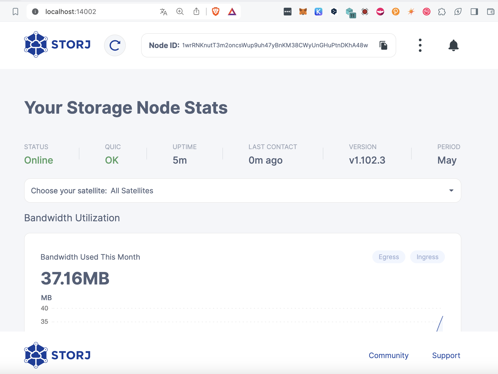

Prerequisites
brew install python
pip install awscli
export AWSACCESSKEYID=
export AWSSECRETACCESSKEY=
aws configureCreate AWS Bucket
➜ aws s3api create-bucket --bucket eu-west-1-sj-bucket-1 --create-bucket-configuration LocationConstraint=eu-west-1
{
"Location": "http://eu-west-1-sj-bucket-1.s3.amazonaws.com/"
}
aws s3api list-buckets
{
"Buckets": [
{
"Name": "eu-west-1-sj-bucket-1",
"CreationDate": "2024-05-10T14:05:02.000Z"
}
],
"Owner": {
"DisplayName": "julian.wendland",
"ID": "ffe4312af946a4da830052f3be67796c0f639d467d19c97f406b33cf1cdfb724"
}
}Mount Bucket to MacOS
/bin/bash -c "$(curl -fsSL https://raw.githubusercontent.com/Homebrew/install/master/install.sh)"
brew install --cask macfuse
brew install gromgit/fuse/s3fs-mac
sudo shutdown -r now
echo AWSACCESSKEYID:AWSSECRETACCESSKEY > ~/.passwd-s3fs
chmod 600 ~/.passwd-s3fs
sudo mkdir -p /Users/jw/storj/
sudo chown jw /Users/jw/storj/
sudo s3fs eu-west-1-sj-bucket-1:/storj /Users/jw/storj/s3/ -o passwd_file=${HOME}/.passwd-s3fs -o allow_other
sudo diskutil unmount force /Users/jw/storj/s3/ Create Auth Token https://docs.storj.io/node/get-started/auth-token
export AUTHTOKEN=Download Identity
curl -L https://github.com/storj/storj/releases/latest/download/identity_darwin_arm64.zip -o identity_darwin_arm64.zip
unzip -o identity_darwin_arm64.zip
chmod +x identity
sudo mv identity /usr/local/bin/identityCreate Idnetity
identity create storagenode
identity authorize storagenode <Replace with E-mail : Auth Token>Confirm Identity
grep -c BEGIN ~/Library/Application\ Support/Storj/identity/storagenode/ca.cert
grep -c BEGIN ~/Library/Application\ Support/Storj/identity/storagenode/identity.certBackup Identity
cp ~/Library/Application\ Support/Storj/identity/storagenode/ca.cert /Users/jw/storagenode/
cp ~/Library/Application\ Support/Storj/identity/storagenode/identity.cert /Users/jw/storagenode/Configure NoIP & Portforwarding https://docs.storj.io/node/get-started/port-forwarding
➜ netstat -nr | grep default
default 192.168.2.1 UGScg en0
default fe80::209:4fff:fea2:1bd8%en0 UGcg en0
default fe80::%utun0 UGcIg utun0
default fe80::%utun1 UGcIg utun1
default fe80::%utun2 UGcIg utun2
➜ ipconfig getifaddr en0
192.168.2.134Configure QUIC
sysctl kern.ipc.maxsockbuf
echo "kern.ipc.maxsockbuf=2875000" >> /etc/sysctl.d/udp_buffer.conf
sudo sysctl -w kern.ipc.maxsockbuf=2875000Prepare Storagenode
docker pull storjlabs/storagenode:latestRun setup command for storagenode
docker run --rm -e SETUP="true" \
--user $(id -u):$(id -g) \
--mount type=bind,source="/Users/jw/storagenode/",destination=/app/identity \
--mount type=bind,source="/Users/jw/storj/",destination=/app/config \
--name storagenode storjlabs/storagenode:latestRun Storagenode with config
docker run -d --restart unless-stopped --stop-timeout 300 \
-p 28967:28967/tcp \
-p 28967:28967/udp \
-p 127.0.0.1:14002:14002 \
-e WALLET="0x9c2abcf23b58b84720bbe4cf0e219b718476868f" \
-e EMAIL="julian.wendland@gmx.de" \
-e ADDRESS="storagenode-42.ddns.net:28967" \
-e STORAGE="8TB" \
--user $(id -u):$(id -g) \
--mount type=bind,source="/Users/jw/storagenode/",destination=/app/identity \
--mount type=bind,source="/Users/jw/storj/",destination=/app/config \
--name storagenode storjlabs/storagenode:latest
➜ docker ps
CONTAINER ID IMAGE COMMAND CREATED STATUS PORTS NAMES
d97849abf896 storjlabs/storagenode:latest "/entrypoint" 3 seconds ago Up 2 seconds 127.0.0.1:14002->14002/tcp, 0.0.0.0:28967->28967/tcp, 0.0.0.0:28967->28967/udp storagenodeVisit your Storagenode http://localhost:14002 